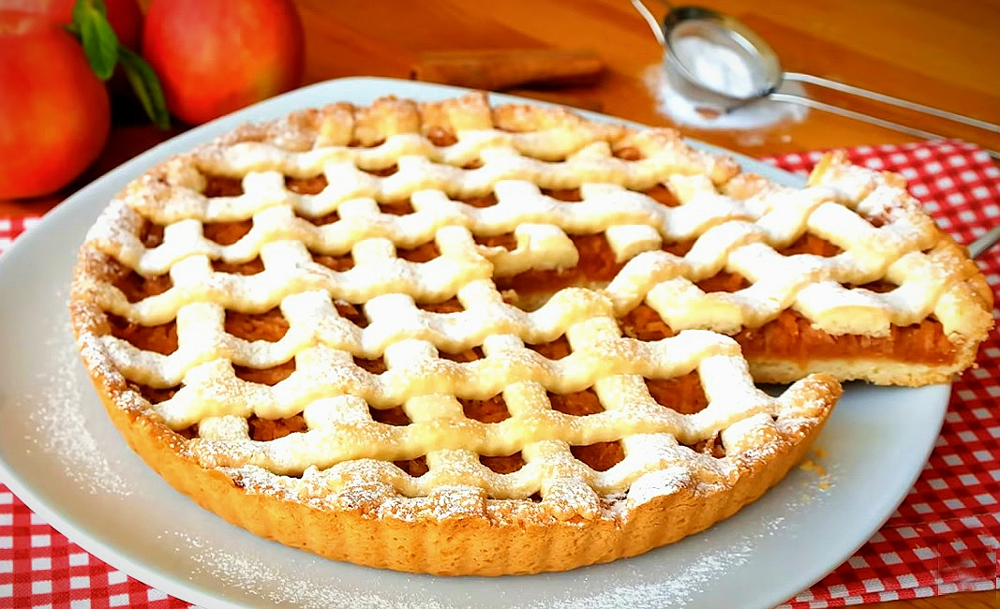

Elmalı Tart!

Malzemeler:
- yarım paket oda sıcaklığında tereyağı ya da margarin (125 gr)
- 1 adet yumurta
- yarım su bardağı toz şeker
- yarım paket kabartma tozu
+2 yemek kaşığı toz şeker (harç için)
- aldığı kadar un
- 4 adet orta boy elma
- 1 tatlı kaşığı tarçın
- pudra şekeri
Nasıl Yapılır?
- İlk olarak elmalı iç harcını hazırlayalım.
- Elmaların kabuklarını soyup rendeleyelim.
- Tarçını ve şekeri de ekleyip pişirelim ve ocaktan alıp soğumaya bırakalım.
- Daha sonra tart hamurunu hazırlayım.
- Bir kapta yumurta, tereyağı, şekeri iyice elimizle karıştıralım.
Kabartma tozu ve unu azar azar ekleyip ele yapışmayan
kulak memesi yumuşaklığında bir hamur elde edelim.
- Hamuru 15 dk. kadar dinlenmeye bırakalım.
- Hamur ve iç harcını tart kalına yerleştirelim.
- Dinlenen hamurdan portakal büyüklüğünde bir parça ayıralım.
Kalan hamurdan orta boy borcam tepsisi
ya da tart tepsisi kadar oklava ile açalım.
- Yağlanmış tepsiye yerleştirip elmalı harcı döküp yayalım.
Portakal büyüklüğündeki hamuru da açıp şeritler kesip üzerine koyalım.
- Önceden ısıtılmış 185 derece fırında kızarana kadar pişirelim.
- Son olarak pudra şekeri serp edip servis edebiliriz
Afiyet Olsun!
geri